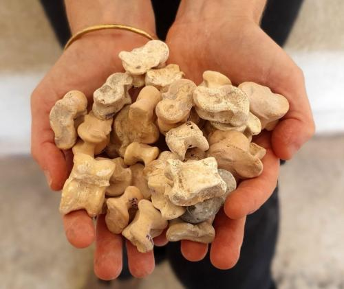
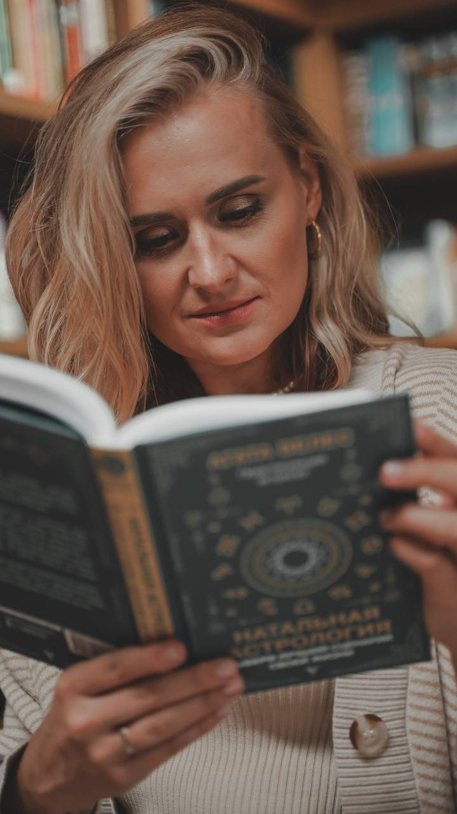
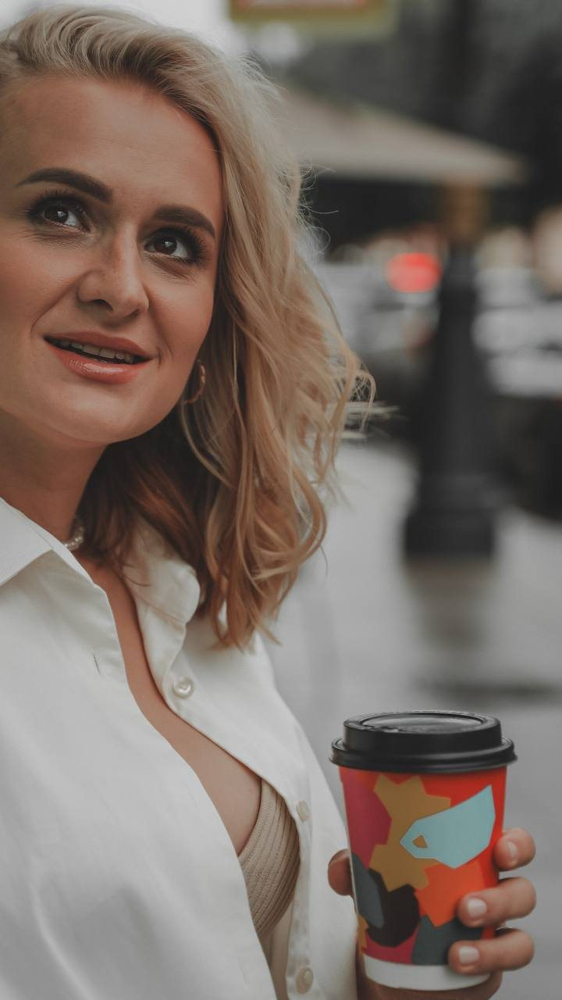

Древний город в горах Турции. 1800 лет назад здесь спрашивали камень о деньгах, дороге и будущем. Загадайте вопрос и бросьте кости прямо здесь 👇
Кибира стояла на юго-западе нынешней Турции. На её главной площади, агоре, возвышался каменный столб выше человеческого роста, и со всех четырёх сторон на нём были высечены 56 ответов богов
Потом столб разобрали и замуровали в стену маленькой часовни. Почти два тысячелетия он пролежал в кладке, пока в 2024 году археологи не извлекли его на раскопках. А перевод надписей учёные опубликовали только этой осенью

Гадали так: брали пять косточек, бросали к подножию камня и смотрели, какими гранями они легли. У каждой косточки четыре грани: 1, 3, 4 и 6. По комбинации находили свою строку и своего бога
Загадайте вопрос про деньги, дорогу или будущее и бросьте кости
Кости это фортуна. Удача, совпадение, игра случая. Бросьте ещё раз, и ответ может стать другим, а один и тот же ответ каждый поймёт по-своему
Поэтому в главных вопросах о деньгах и власти сильные мира сего полагались на астрологию. Она считает движение планет, и его можно рассчитать на годы вперёд
Кости показывают удачу на один бросок. А планеты показывают время: когда деньги придут легче, а когда лучше подождать. И у каждого это время своё, оно зависит от дня рождения
Мой денежный месяц по дате рожденияЯ посчитаю, где стояли планеты в ваш день рождения, и найду, в какие дни октябре 2026 они поддерживают ваши деньги, а в какие проверяют. Поэтому у двух людей одного знака даты получаются разные
Время рождения не нужно. Расчёт идёт прямо в вашем телефоне: дата никуда не отправляется и нигде не сохраняется
А деньги не живут отдельно от остальной жизни. Работа и начальник. Партнёр и общий бюджет. Здоровье и силы, без которых не взяться за новое. Все сферы влияют друг на друга, и одна без другой не складывается
Поэтому в прогнозе на год я смотрю все сферы вместе: где поддержка, где проверка, и как одно тянет за собой другое. На 12 месяцев вперёд, с периодами и компенсаторикой на каждый трудный
Как заказать прогноз на годСейчас мы посчитали ваш месяц по дате рождения. Это уже ваш личный расчёт, он не про всех Овнов или всех Рыб
Но в астрологии важны ещё время и город рождения. По ним натальная карта строится на точный момент вашего рождения, и планеты распределяются по двенадцати домам. Дома - это сферы жизни: деньги, отношения, работа, здоровье. Так видно, какую сферу вашей жизни затронет каждое движение планет. У человека, родившегося с вами в один день, но в другое время или в другом городе, карта будет другой. Такой расчёт я делаю в индивидуальном прогнозе
А в жизни вопросы звучат так:
Увольняться весной или дотянуть до осени?
Когда начнутся отношения, которых я жду?
В каком месяце запускать своё дело?
Ответ на такие вопросы - в вашем личном прогнозе на год: в нём видны важные периоды

Прогноз на год у астрологов бывает трёх видов. Разница в том, что вы в итоге знаете:
Один текст на миллионы людей вашего знака
Вы знаете: ничего личногоВидно, что вероятно в году, но непонятно когда: в марте или в ноябре
Вы знаете: чтоЧто может произойти, в какие периоды и что делать, когда становится трудно
Вы знаете: что, когда и как смягчитьПрогноз, который пугает кучей негативных событий, не только бесполезен, но и опасен. Он может вас запрограммировать, и из страха вы сами притянете то, чего боитесь
Для меня годовой прогноз - это инструмент. Ваша дорожная карта и навигатор, с которым вы проходите год с минимальными рисками и потерями. Для этого в астрологии есть компенсаторика: простые действия, которые снижают негативное влияние планет. Когда вы их выполняете, вы прорабатываете сложные планеты и снижаете градус их воздействия. Так вы подстилаете себе соломки, и даже самые тяжёлые периоды проходят легче. Например:
Так трудный период превращается в план: вы заранее знаете, что сделать, и проходите его спокойнее. Какие действия нужны именно вам и в какие периоды, я подбираю под вашу карту и ваш год
Как получить годовой прогноз
Вы увидите, как пройдёт ваш год: где вас ждут возможности, а где стоит подстраховаться, где действовать, а где стоит подождать. И получите список компенсирующих действий на трудные периоды
Ваш год не начинается 1 января, а решения не ждут дня рождения. Я смотрю ваш текущий личный год по соляру и расписываю транзиты на 12 месяцев от дня, когда вы обратились
Для тех, кто хочет быть готовым к меняющимся новостям. Кто не хочет смотреть, как планы рушатся в один миг. И у кого тревога и хаос забирают силы
Формат: голосовой разбор на 40-60 минут, в зависимости от картины года, и PDF с важными периодами года
Тексты сообщений без изменений по смыслу, имена клиенток не указываем
Год считаю от дня, когда вы написали. Ждать дня рождения не нужно
Цена действует 24 часа после вашего расчёта. Осталось: 24:00:00
🎁 Подумайте и о подарках к Новому году. По этой цене можно заказать прогноз не только себе, но и родным и близким, а прогноз на 2027 год подарить любимым людям
В канале я разбираю, что небо готовит для денег, работы и отношений, и что с этим делать
Перейти в канал